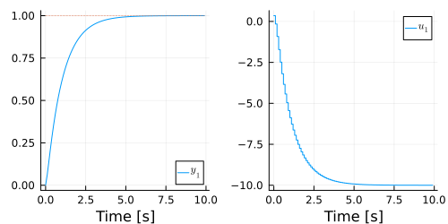

Prestabilization
The optimization problem that is solved is obtained by simulating the system forward using the dynamics
\[x_{k+1} = F x_k + G u_k.\]
This might lead to an ill-conditioned optimization problem if $F$ is unstable and the prediction horizon is long. To mitigate numerical problems, one can use a prestabilizing feedback, which reparametrizes $u$ with a new decision variable $v$ and a feedback gain $K$ as
\[u_k = -K x_k +v_k.\]
This gives the new closed-loop system
\[x_{k+1} = (F-GK) x_k + G v_k.\]
If $K$ is selected such that $F-GK$ is stable, the condensed Quadratic program will be better conditioned compared to the unstable $F$.
In LinearMPC.jl you can set a stabilizing feedback $K$ for an MPC controller mpc with
set_stabilizing_feedback!(mpc,K)A popular choice of $K$ is as the gain from solving an infinite horizon LQR problem. This gain can be set as the stabilizing feedback with
set_stabilizing_feedback!(mpc)Example
Consider a first-order system with a pole in 10, which has the transfer function
\[G(s) = \frac{10}{s-10}.\]
Let's create an MPC controller with prediction horizon $N_p = 50$ and sample time $T_s = 0.1$ seconds for this system:
using LinearMPC
using ControlSystemsBase
sys = tf([1],[1, -10])
mpc = LinearMPC.MPC(sys;Np=50, Ts=0.1)
set_objective!(mpc;Q=1,Rr=1,R=0)Moreover, we set the weights $Q = 1$ and $R_r = 1$ to be able to track references.
If we try to simulate the system with this controller for $N=100$ time steps with the setpoint $r=1$
sim = LinearMPC.Simulation(mpc;r=[1],N=100)we get an error telling us "Could not setup optimization problem". The reason for this error is that the resulting optimization problem is very ill-conditioned, and cannot handled by the optimization solver.
To see this more closely, we can check the condition number for the Hessian of the resulting optimization problem:
using LinearAlgebra
optimization_problem = LinearMPC.mpc2mpqp(mpc)
display(cond(optimization_problem.H))which is around 1e43. This is a very ill-conditioned problem (typically condition numbers above $\approx$ 1e6 might lead to numerical problems.)
To make the optimization problems better conditioned, we can add a prestabilizing feedback:
set_prestabilizing_feedback!(mpc)Now if we check the condition number again
optimization_problem = LinearMPC.mpc2mpqp(mpc)
display(cond(optimization_problem.H))
we get that it is $\approx$ 8e2, which is a striking improvement! Now, if we simulate the system again, but with our updated controller, we get that the output successfully tracks the reference $r=1$.
sim = LinearMPC.Simulation(mpc;r=[1],N=100)
using Plots
plot(sim)